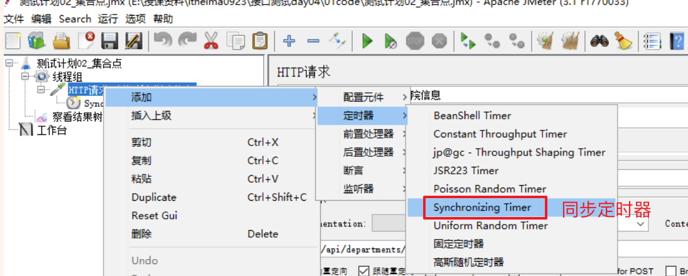

Jmeter 集合点
目标
- 掌握集合点的场景及使用
1. 需求
1. 学院查询-所有 http://127.0.0.1:8000/api/departments/
2. 学院查询-指定 http://127.0.0.1:8000/api/departments/T02/
需求对(学院查询-所有)这个接口进行20个用户【同时】请求访问操作。
问题
1. 设置线程组循环次数为：20，解决不了需求问题
2. 设置线程组线程数量为：20，同样解决不了问题
2 集合点(同步定时器)
2.1 集合点的作用
作用: 阻塞线程，直到指定的线程数量到达后，再一起释放,模拟并发.
主要使用场景是并发亮特别大的场景,比如“秒杀”, “抢购”等场景.
2.2 需求实现分析
1. 测试计划->线程组
2. 线程组->Sampler->HTTP请求(学院查询-所有)
3. 线程组->Sampler->HTTP请求(学院查询-指定)
4. HTTP请求(学院查询-所有)->定时器->Synchronizing Timer
5. 测试计划->监听器->察看结果树
2.3 实现步骤
1. 创建测试计划、添加线程组、通过sampler添加http请求,添加同步定时器

2. 配置同步定时器

参数解释:
1. Number of Simulated Users to Group
by:集合多少用户后再执行请求（也就是执行的线程数）
扩展选项：
2. Timeout in milliseconds：超时时间(毫秒)
1) 设置为0，无限等待，直到达到集合点设置的线程数。
2) 设置指定时长，如果到达指定时长，集合点数量未到达，集合多少用户释放多少用户数量。
3. 添加聚合报告查看运行结果
添加聚合报告:


2.4 集合点作用域
1. 集合点只对一个请求起作用，如果针对指定请求起作用，放到该请求内；
2. 集合点对多个个请求起作用，放到与请求平级同一层次；
2.5 集合点-总结
集合点,也叫同步定时器, 作用是阻塞线程的释放,直到线程达到一定数量一次释放,产生并发的压力,从而模拟模拟并发场景.
每个请求对所在的请求起作用,假如要想让一个集合点对多个请求起作用,要调整集合点和请求的层级关系,使其同一个层级.
更多定时器资料请参考: